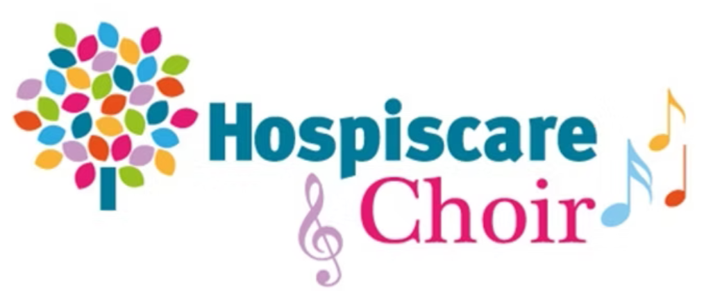
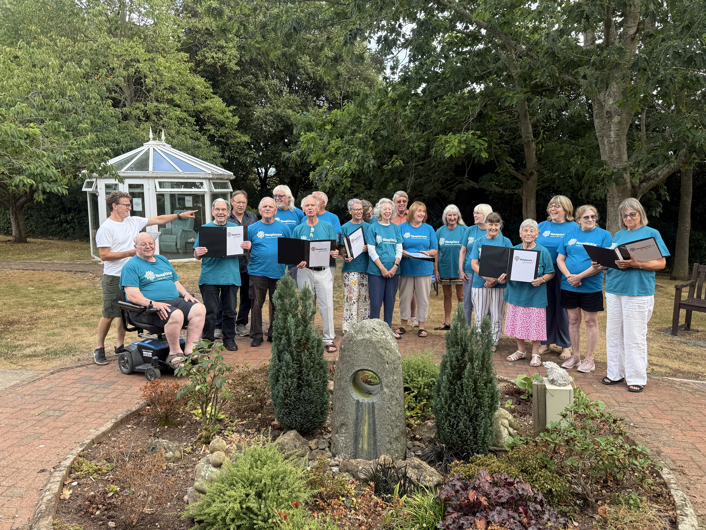
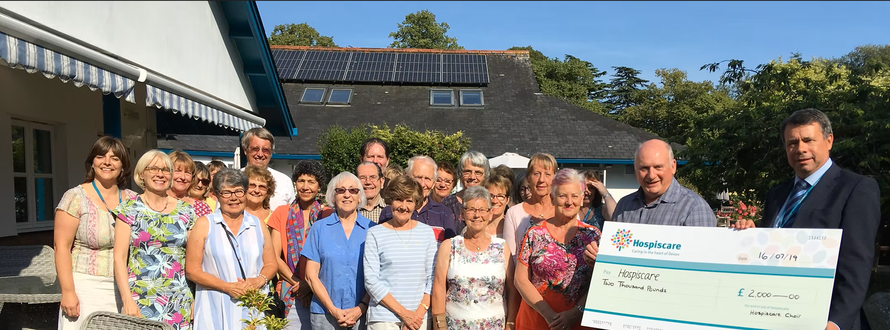

Hospiscare Choir is an independent charity choir which was set up in 2015 for staff, volunteers and friends of Hospiscare to enjoy the many benefits of singing while supporting the amazing work of a local charity close to their hearts.

The choir sings a range of popular songs arranged by local Choir Master and composer Matt Gardner who also accompanies us on the piano. We perform at Hospiscare events, fundraisers, and collections and will consider requests to sing at non-Hospiscare events for a donation to the charity. The choir makes regular donations to support Hospiscare’s work in Exeter, Mid and East Devon.
We do not ask prospective members to audition but it does help if you can read music or learn through listening or have previous experience of singing/being in a choir.
We practise every Thursday in Exeter between 5.45–7.15pm and current member's subscription is £5 per week paid termly by electronic bank transfer. There’s also free parking on site.
If you are aged 18+ and would like to join us for a free taster session or for more information please contact us using the below email.
